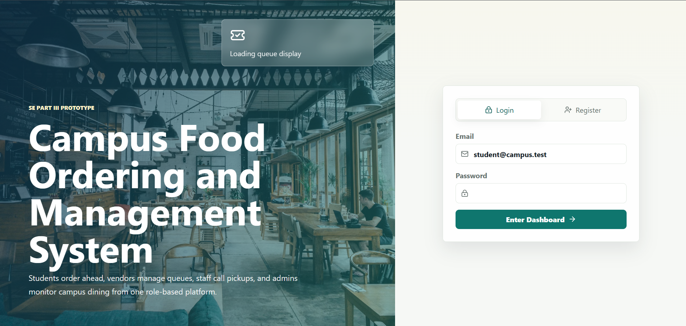

Campus Food Ordering & Management System

The Campus Food Ordering & Management System is a full-stack web application developed as a Software Engineering group project. The platform enables students to order meals in advance, vendors to manage incoming orders, and administrators to monitor campus dining operations from a centralized dashboard.
The system includes secure authentication, role-based access control, order tracking, queue management, mock online payments, and real-time updates using Socket.IO. The frontend was built with React and TypeScript while the backend was developed using Express and SQLite.
This project gave me practical experience in full-stack development, REST API design, Git collaboration, database management, deployment using Vercel and Render, and building software as part of a development team.
Technologies Used
- React
- TypeScript
- Express.js
- SQLite
- Socket.IO
- JWT Authentication
- Vercel
- Render
- Git & GitHub
Key Features
- Role-based authentication
- Student ordering system
- Vendor management dashboard
- Administrator dashboard
- Queue management system
- Real-time updates with Socket.IO
- Mock payment gateway
- Responsive interface